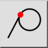
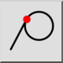
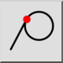
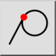

Tangencial
Barra de Ferramenta / Ícone:
 

Menu: Snap > Tangencial
Atalho: S, B
Comandos: snaptangential | sb
Esta é uma tradução automática.
Barra de Ferramenta / Ícone:
 

Menu: Snap > Tangencial
Atalho: S, B
Comandos: snaptangential | sb
Passa para o ponto de tangência num arco, círculo ou elipse. Isto só se aplica ao desenhar linhas. O ponto de snap é o ponto tangente de uma linha imaginária desde o ponto zero relativo, tangente ao arco ou círculo clicado.